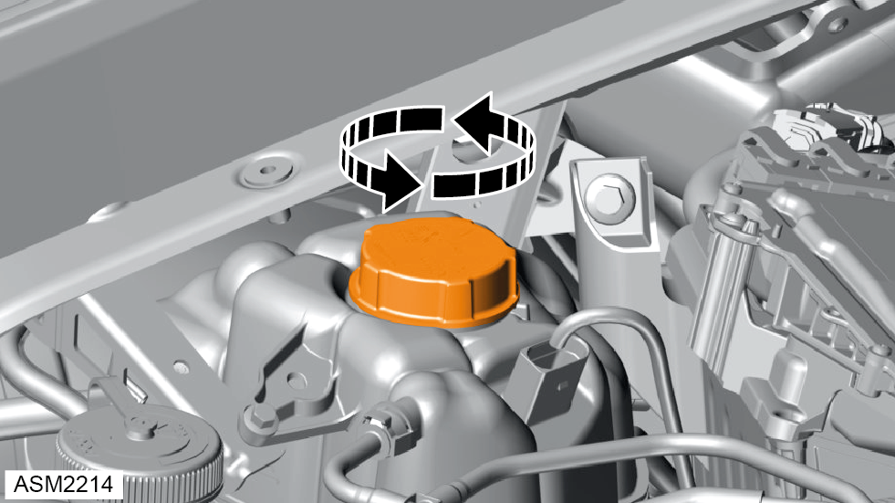
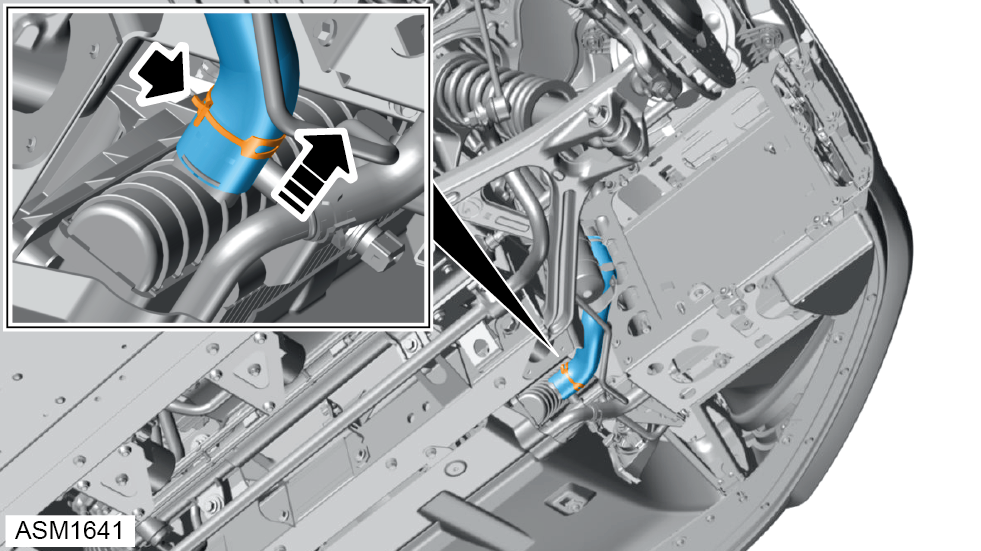
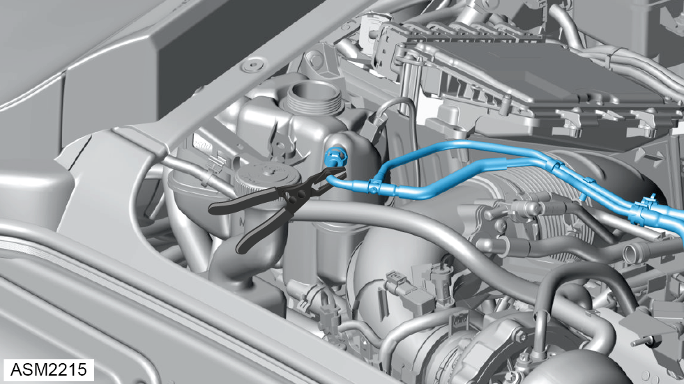
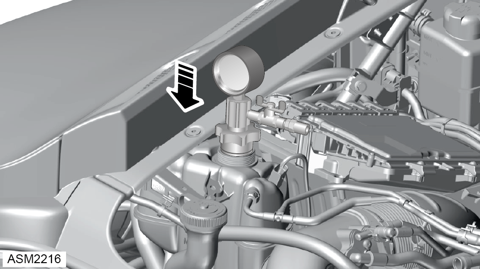
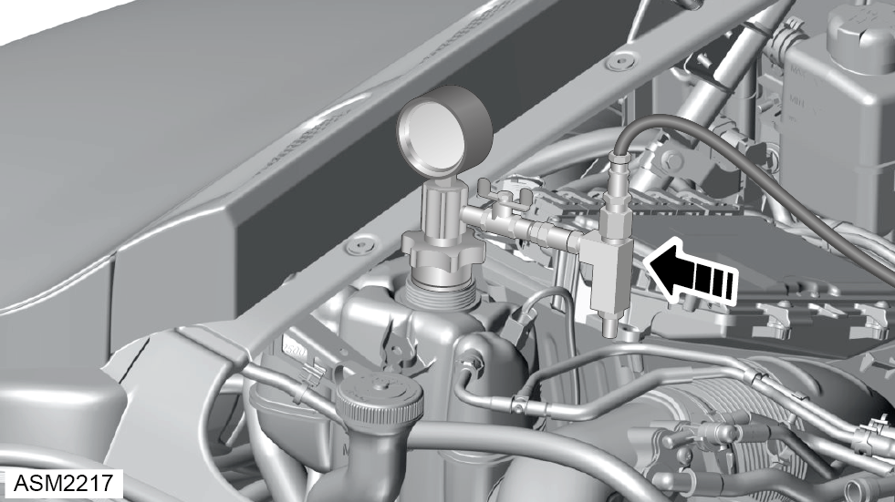
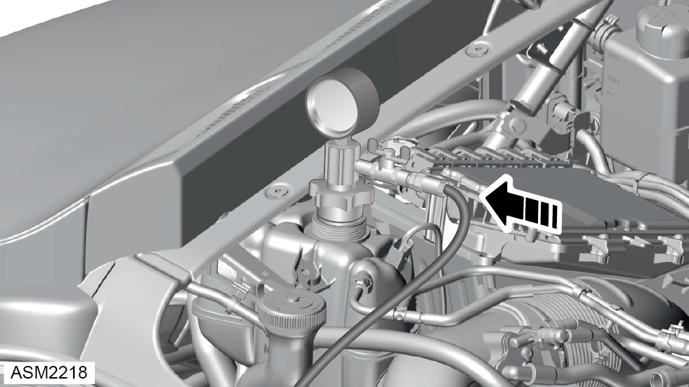
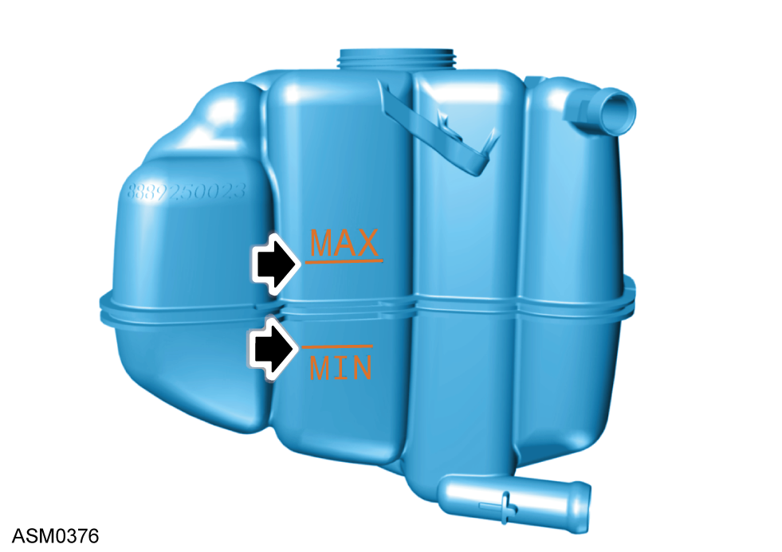

Coolant Replace - 4 Cylinder
Print
Operation Code: 46.01.00-00
Drain
- Set heater to coldest temperature.
NOTE: This must be done in order to prevent airlocks in the HVAC system.
- Remove front wheelarch liner right side. Refer to procedure.
- Remove front undertray. Refer to procedure.
 WARNING: Allow engine to cool completely before proceeding.
WARNING: Allow engine to cool completely before proceeding.
- Remove engine cover. Refer to procedure.

- Remove radiator reservoir cap.
- Release hose clamp securing hose to radiator.

- Disconnect hose from radiator and allow coolant to drain completely.
WARNING: Coolant is a toxic substance and can be lethal if ingested.
NOTE: Drain coolant into a suitable container and dispose of appropriately.
Refill
- Reconnect hose to radiator and secure hose clamp.

- Use hose clamp in coolant reservoir overflow hose.

- Install vacuum purge and refill adapter to coolant reservoir.
NOTE: Ensure the tap is open on the adapter.

- Install vacuum pump and air line to adapter.
- Use air line to create vacuum in cooling system.
NOTE: The coolant hoses will collapse during this process. This is normal.
NOTE: Allow vacuum level to reach 20.25 inHg (50-60 CmHg).
- Close tap and remove air line and vacuum pump from adapter.
NOTE: Wait 3 minutes before proceeding to monitor vacuum.
NOTE:If vacuum drops before adding coolant inspect cooling system for leaks and repeat previous step.

- Install coolant hose to adapter.
NOTE: Ensure coolant hose is full of coolant with no air bubbles.
- Open tap and allow system to fill with coolant.
NOTE: The cooling system is full when the gauge reads zero.
- Remove adapter and refit coolant reservoir cap.
- Start and operate engine.
NOTE: Hold engine RPM between 2000 - 2500 RPM.
NOTE: Check there are no leaks coming from the radiator and bleed points.
NOTE: Continue to operate the engine until the radiator cooling fans have turned on and then turned off.
- Turn off engine and allow to cool completely.

- Check coolant level when the car is cold and top up if required.
NOTE: Make sure coolant is filled between the min and max lines.